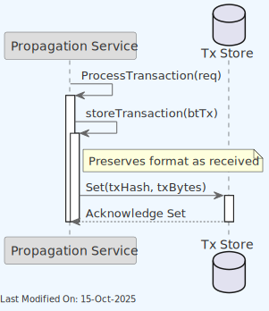

🗂️ Blob Server
Index
- 🗂️ Blob Server
- 1. Description
- 2. Architecture
- 3. Technology
- 4. Data Model
- 5. Use Cases
- 6. Directory Structure and Main Files
- 7. Locally Running the store
- 8. Configuration Options
- 8.1. URL Format
- 8.2. Store URL Settings
- 8.2.1. Common URL Parameters
- 8.2.2. File Backend Parameters
- 8.2.3. S3 Backend Parameters
- 8.2.4. HTTP Backend Parameters
- 8.3. Store Options
- 8.4. File Operation Options
- 8.5. TX Store Configuration Examples
- 8.6. SubTree Store Configuration Examples
- 8.7. Configuration Interactions
- 9. Other Resources
1. Description
The Blob Server is a generic datastore that can be used for any specific data model. In the current Teranode implementation, it is used to store transactions (extended tx) and subtrees.
The Blob Server provides a set of methods to interact with the TX and Subtree storage implementations.
-
Health:
Health(ctx)- Purpose: Checks the health status of the Blob Server.
-
Exists:
Exists(ctx, key)- Purpose: Determines if a given key exists in the store.
-
Get:
Get(ctx, key)- Purpose: Retrieves the value associated with a given key.
-
GetIoReader:
GetIoReader(ctx, key)- Purpose: Retrieves an
io.ReadCloserfor the value associated with a given key, useful for streaming large data.
- Purpose: Retrieves an
-
Set:
Set(ctx, key, value, opts...)- Purpose: Sets a key-value pair in the store.
-
SetFromReader:
SetFromReader(ctx, key, value, opts...)- Purpose: Sets a key-value pair in the store from an
io.ReadCloser, useful for streaming large data.
- Purpose: Sets a key-value pair in the store from an
-
SetTTL:
SetTTL(ctx, key, ttl)- Purpose: Sets a Time-To-Live for a given key.
-
Del:
Del(ctx, key)- Purpose: Deletes a key and its associated value from the store.
-
Close:
Close(ctx)- Purpose: Closes the Blob Server connection or any associated resources.
2. Architecture
The Blob Server is a store interface, with implementations for Tx Store and Subtree Store.

The Blob Server implementations for Tx Store and Subtree Store are injected into the various services that require them. They are initialised in the daemon/daemon_stores.go file and passed into the services as a dependency. See below:
func getTxStore(logger ulogger.Logger) blob.Store {
if txStore != nil {
return txStore
}
txStoreUrl, err, found := gocore.Config().GetURL("txstore")
if err != nil {
panic(err)
}
if !found {
panic("txstore config not found")
}
txStore, err = blob.NewStore(logger, txStoreUrl, options.WithHashPrefix(10))
if err != nil {
panic(err)
}
return txStore
}
func getSubtreeStore(logger ulogger.Logger) blob.Store {
if subtreeStore != nil {
return subtreeStore
}
subtreeStoreUrl, err, found := gocore.Config().GetURL("subtreestore")
if err != nil {
panic(err)
}
if !found {
panic("subtreestore config not found")
}
subtreeStore, err = blob.NewStore(logger, subtreeStoreUrl, options.WithHashPrefix(10))
if err != nil {
panic(err)
}
return subtreeStore
}
3. Technology
3.1 Overview
Key technologies involved:
-
Go Programming Language (Golang):
- A statically typed, compiled language known for its simplicity and efficiency, especially in concurrent operations and networked services.
- The primary language used for implementing the service's logic.
3.2 Store Options
The Blob Server supports various backends, each suited to different storage requirements and environments.
-
Batcher: Provides batch processing capabilities for storage operations.
-
File: Utilizes the local file system for storage.
-
HTTP: Implements an HTTP client for interacting with a remote blob storage server.
-
Local TTL: Provides local Time-to-Live (TTL) functionality for managing data expiration.
-
Memory: In-memory storage for temporary and fast data access.
-
Null: A no-operation store for testing or disabling storage features.
-
Amazon S3: Integration with Amazon Simple Storage Service (S3) for cloud storage. Amazon S3
Each store option is implemented in its respective subdirectory within the stores/blob/ directory.
The system also includes a main server implementation (server.go) that provides an HTTP interface for blob storage operations.
Options for configuring these stores are managed through the options package.
3.3 Concurrent Access Patterns
The Blob Server includes a ConcurrentBlob implementation that provides thread-safe access to blob storage operations with optimized concurrent access patterns. This feature is particularly important in high-concurrency environments where the same blob might be requested multiple times simultaneously.
Key Features:
- Double-Checked Locking Pattern: Ensures that only one fetch operation occurs at a time for each unique key, while allowing concurrent operations on different keys
- Generic Type Support: Parametrized by a key type K that must satisfy
chainhash.Hashconstraints for type-safe handling - Duplicate Operation Prevention: Avoids duplicate network or disk operations when multiple goroutines request the same blob simultaneously
- Efficient Resource Usage: Other goroutines wait for completion rather than duplicating work
Usage Pattern:
// Create a concurrent blob instance
concurrentBlob := blob.NewConcurrentBlob[chainhash.Hash](blobStore, options...)
// Get a blob with automatic fetching if not present
reader, err := concurrentBlob.Get(ctx, key, fileType, func() (io.ReadCloser, error) {
// This function is called only if the blob doesn't exist
return fetchBlobFromSource(key)
})
The ConcurrentBlob wrapper is particularly useful for services that need to fetch the same data concurrently, such as block validation or transaction processing services.
3.4 HTTP REST API Server
The Blob Server includes a comprehensive HTTP REST API server implementation (HTTPBlobServer) that provides full HTTP access to blob storage operations. This server implements the standard http.Handler interface and can be easily integrated into existing HTTP server infrastructure.
Supported HTTP Endpoints:
- GET /health: Health check endpoint returning server status
- GET /{key}: Retrieve blob by key with optional range support
- POST /{key}: Store new blob data
- PUT /{key}: Update existing blob data
- DELETE /{key}: Delete blob by key
- GET /{key}/dah: Get Delete-At-Height information for a blob
- POST /{key}/dah: Set Delete-At-Height for a blob
Usage Example:
// Create HTTP blob server
httpServer := blob.NewHTTPBlobServer(blobStore, logger)
// Start HTTP server
http.Handle("/blob/", http.StripPrefix("/blob", httpServer))
log.Fatal(http.ListenAndServe(":8080", nil))
The HTTP server is particularly useful for external integrations, debugging, and providing web-based access to blob storage functionality.
4. Data Model
-
Subtree Data Model: Contain lists of transaction IDs and their Merkle root.
-
Extended Transaction Data Model: Include additional metadata to facilitate processing.
5. Use Cases
5.1. Asset Server (HTTP): Get Transactions

5.2. Asset Server (HTTP): Get Subtrees

5.3. Block Assembly
New Subtree and block mining scenarios:

Reorganizing subtrees:

5.4. Block Validation
Service:

gRPC endpoints:

5.5 Propagation: TXStore Set()

6. Directory Structure and Main Files
./stores/blob/
├── Interface.go # Interface definitions for the project.
├── batcher # Batching functionality for efficient processing.
│ └── batcher.go # Main batcher functionality.
├── factory.go # Factory methods for creating instances.
├── file # File system based implementations.
│ ├── file.go # File system handling.
│ └── file_test.go # Test cases for file system functions.
├── http # HTTP client implementation for remote blob storage.
│ └── http.go # HTTP specific functionality.
├── localttl # Local Time-to-Live functionality.
│ └── localttl.go # Local TTL handling.
├── memory # In-memory implementation.
│ └── memory.go # In-memory data handling.
├── null # Null implementation (no-op).
│ └── null.go # Null pattern implementation.
├── options # Options and configurations.
│ ├── Options.go # General options for the project.
│ └── Options_test.go # Test cases for options.
├── s3 # Amazon S3 cloud storage implementation.
│ └── s3.go # S3 specific functionality.
├── server.go # HTTP server implementation for blob storage.
└── server_test.go # Test cases for the server implementation.
7. Locally Running the store
The Blob Server cannot be run independently. It is instantiated as part of the main.go initialization and directly used by the services that require it.
8. Configuration Options
The Blob Server can be configured through URL-based settings and option parameters. This section provides a comprehensive reference for all configuration options.
8.1. URL Format
Blob store configurations use URLs that follow this general structure:
<scheme>://<path>[?<parameter1>=<value1>&<parameter2>=<value2>...]
Components:
- Scheme: Determines the storage backend type (file, memory, s3, http, null)
- Path: Specifies the storage location or identifier
- Parameters: Optional query parameters that modify behavior
8.2. Store URL Settings
8.2.1. Common URL Parameters
| Parameter | Type | Default | Description | Impact |
|---|---|---|---|---|
batch |
Boolean | false | Enables batch operations | Improves performance by batching operations |
sizeInBytes |
Integer | 4194304 | Maximum batch size in bytes (4MB default) | Controls batch size; larger values increase throughput but use more memory |
writeKeys |
Boolean | false | Whether to write keys along with blob data | Enables key storage alongside blob content |
batch_size |
Integer | 1000 | Maximum items in a batch | Controls batch size; larger values increase throughput but use more memory |
batch_duration |
Integer (ms) | 50 | Maximum time before processing a batch | Balances throughput vs. latency |
localDAHStore |
String | "" | Path to local DAH store for Delete-At-Height functionality | Enables automatic expiry of data based on blockchain height |
localDAHStorePath |
String | "./" | Path for local DAH store metadata | Directory for DAH metadata storage |
logger |
Boolean | false | Enables debug logging for all blob operations | Adds detailed logging for troubleshooting |
8.2.2. File Backend Parameters
| Parameter | Type | Default | Description |
|---|---|---|---|
| Path component | String | None (required) | Base directory for file storage |
dahCleanerInterval |
Duration | "1m" | Frequency of expired blob cleanup operations |
header |
String | "" | Custom header prepended to all stored blobs |
eofmarker |
String | "" | Custom footer appended to all stored blobs |
8.2.3. S3 Backend Parameters
| Parameter | Type | Default | Description |
|---|---|---|---|
| Path component | String | None (required) | S3 bucket name |
region |
String | "us-east-1" | AWS region for S3 bucket |
endpoint |
String | AWS S3 endpoint | Custom endpoint for S3-compatible storage |
forcePathStyle |
Boolean | false | Force path-style addressing |
subDirectory |
String | "" | S3 object key prefix for organization |
MaxIdleConns |
Integer | 100 | Maximum number of idle HTTP connections |
MaxIdleConnsPerHost |
Integer | 100 | Maximum idle connections per host |
IdleConnTimeoutSeconds |
Integer | 100 | Idle connection timeout in seconds |
TimeoutSeconds |
Integer | 30 | Request timeout for S3 operations |
KeepAliveSeconds |
Integer | 300 | Connection keep-alive duration |
8.2.4. HTTP Backend Parameters
| Parameter | Type | Default | Description |
|---|---|---|---|
| Host+Path | String | None (required) | Remote HTTP blob server endpoint |
timeout |
Integer (ms) | 30000 | HTTP request timeout |
8.3. Store Options
Additional configuration is provided through Store Options when creating a store:
| Option | Type | Description | Impact |
|---|---|---|---|
WithDefaultBlockHeightRetention |
uint32 | Sets block height retention | Controls automatic deletion after specified blockchain height |
WithDefaultSubDirectory |
String | Sets subdirectory within main path | Organizes data in storage hierarchy |
WithHashPrefix |
Integer | Number of characters from hash to use in filenames | Improves file organization and lookup performance |
WithSHA256Checksum |
Boolean | Enables SHA256 checksum generation | Adds data integrity verification |
WithLongtermStorage |
String, URL | Configures persistent storage options | Enables three-tier storage (memory, local, longterm) |
8.4. File Operation Options
These options can be specified per operation:
| Option | Type | Description | Impact |
|---|---|---|---|
WithDeleteAt |
uint32 | Sets blockchain height for automatic deletion | Controls per-file data retention |
WithFilename |
String | Sets specific filename | Overrides default hash-based naming |
WithFileExtension |
String | Sets file extension | Useful for identifying file types |
WithAllowOverwrite |
Boolean | Controls overwriting of existing files | Prevents accidental data loss when false |
8.5. TX Store Configuration Examples
-
Null Store (No-op)
txstore.${YOUR_USERNAME}=null:/// -
Amazon S3
txstore.${YOUR_USERNAME}=s3:///mytxstore?region=eu-west-1&batch=true&batch_size=2000&batch_duration=100 -
File System with DAH
txstore.${YOUR_USERNAME}=file:///data/txstore?batch=true&localDAHStore=true&localDAHStorePath=/data/txstore-dah -
Memory Store
txstore.${YOUR_USERNAME}=memory:///
8.6. SubTree Store Configuration Examples
-
Null Store (No-op)
subtreestore.${YOUR_USERNAME}=null:/// -
Amazon S3 with Local DAH Store
subtreestore.${YOUR_USERNAME}=s3:///subtreestore?region=eu-west-1&localDAHStore=true&localDAHStorePath=/data/subtreestore-dah -
File System with Local DAH Store
subtreestore.${YOUR_USERNAME}=file:///data/subtreestore?localDAHStore=true&localDAHStorePath=./data/subtreestore-dah -
Memory Store
subtreestore.${YOUR_USERNAME}=memory:///
8.7. Configuration Interactions
8.7.1. Storage Backend Selection
The URL scheme determines which backend is used, which in turn determines which parameters are relevant. For example, region is only relevant for S3 storage.
8.7.2. Batching Configuration
When batching is enabled (batch=true), the batch_size and batch_duration parameters control batch behavior. Operations are batched until either the size limit is reached or the duration expires, whichever happens first.
8.7.3. Delete-At-Height Functionality
When localDAHStore is enabled, the store maintains metadata about when items should be deleted based on blockchain height. This metadata is stored at the path specified by localDAHStorePath. Individual files can set their own DAH values using the WithDeleteAt option.
8.7.4. Block Height Retention
The BlockHeightRetention setting (via WithDefaultBlockHeightRetention) interacts with the DAH setting (via WithDeleteAt). The store-level setting provides a default, while the file-level setting allows per-file control.